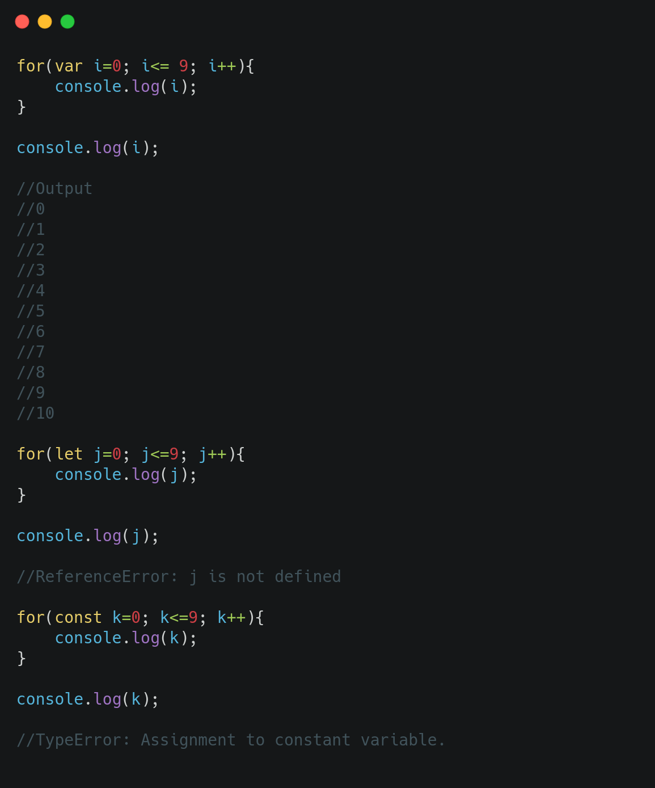
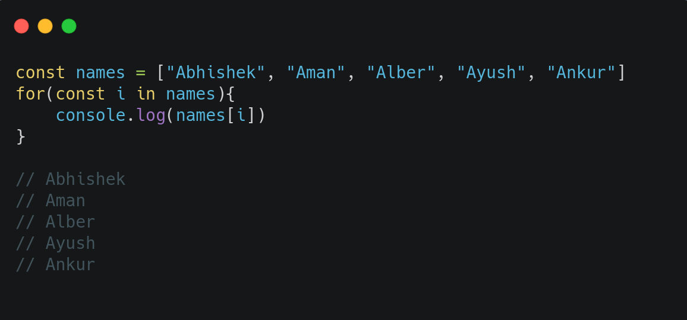
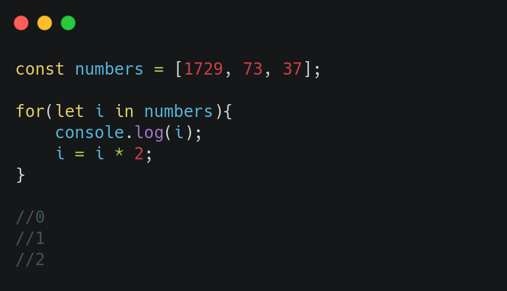

Code 1

In the First part of the code variable i is declared with var keyword so it is declared in global scope. For every console.log inside the for loop it prints from 0 to 9 upto which the condition statisfies, when i = 10, the for loop breaks. Outside for loop console.log prints the current value of i i.e 10.
In the Second part of the code variable j is declared with let keyword so it is valid in the block of for loop only, so for every console.log it prints the value of j. When the value of j is 10, for loop breaks and scope of j ends there, when code encounters console.log outside the for loop, j is undefined for it.
In the Third part of the code variable k is declared with const keyword so it's scope is inside the for loop , when the loop tries to increment value of k by 1, it throws an TypeError as const variables can be re-assigned again after declaration.
Code 2

In this code an array names is defined with const keyword. For-in loop has been initiated with i declared as const to run over names array and it's scope is inside the for-in loop, so for every value of i, a new instance of block of code is created with which each time it prints element of names array.
Code 3

In this code an array is defined with const keyword in the global scope. For-in loop has been initialized with let keyword which is in scope of for loop only. for every value of i, console.log prints the value of i, even though the value of i is multiplied by 2 each time, because the instance of each loop is created i 's value doesn't change even after multiplication by 2, it runs on the length of the array only.